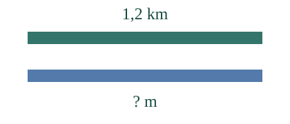
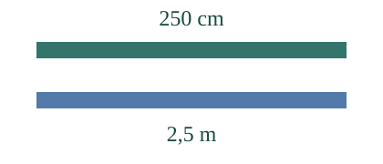
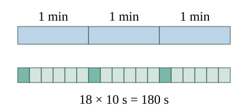

<link rel="stylesheet" href="lesson.css">
<section data-unit-lesson>


<section id="muunnos-malli" data-teaching-step="1" data-lesson-role="teaching-step">
<div class="unit-intro"><div><h2>Sama matka, toinen yksikkö</h2><p>Aava lukee 1,2 km. Loikka tarvitsee merkinnän metreinä. Muuttuuko matka?</p></div></div>
<div data-audience-columns data-lesson-context-source="workbench"><div data-visual-column><div data-unit-image></div></div><div data-response-column><p data-unit-readout aria-live="polite">1 km = 1000 m. Sama matka voidaan kirjoittaa toisessa yksikössä.</p><button type="button" data-unit-reveal>Vaihda yksikkö</button><details data-lesson-role="teaching-step"><summary>Vaihda lukua ja yksiköitä</summary><label>Lukuarvo<input data-unit-value value="1,2" inputmode="decimal"></label><label>Lähtöyksikkö<select data-unit-from><option value="km">km</option><option value="m">m</option><option value="cm">cm</option><option value="mm">mm</option><option value="h">h</option><option value="min">min</option><option value="s">s</option></select></label><label>Kohdeyksikkö<select data-unit-to><option value="m">m</option><option value="km">km</option><option value="cm">cm</option><option value="mm">mm</option><option value="s">s</option><option value="min">min</option><option value="h">h</option></select></label><p>Viivat kuvaavat samaa määrää kahdella merkinnällä. Niiden pituus ei ole numeroakseli. Pituutta ei voi muuntaa ajaksi.</p></details></div></div>
</section>


<nav aria-label="Oppitunnin kohdat" data-lesson-role="metadata"><a href="#muunnos-miksi">Miksi näin?</a> · <a href="#muunnos-kokeile">Uusi mittaus</a> · <a href="#muunnos-lopuksi">Lopuksi</a></nav>


<section id="muunnos-miksi">


<section data-teaching-step="4" data-lesson-role="teaching-step">
<h3>Yksikkö vaihtuu, määrä säilyy</h3><p>Yksi kilometri on 1000 metriä. Siksi 1,2 km on 1,2 × 1000 m = 1200 m. Pienempiä yksiköitä tarvitaan samaan matkaan enemmän.</p><p>Toiseen suuntaan: 250 cm / 100 = 2,5 m, koska 1 m = 100 cm. Lukuarvo pienenee, mutta mittanauhan pituus ei lyhene.</p><figure data-lesson-role="worked-example"></figure>
</section>


<section data-teaching-step="5" data-lesson-role="teaching-step">
<p data-lesson-role="question"><strong>Ennusta:</strong> muuttuuko 3 min sekunneiksi kertomalla sadalla?</p><details data-lesson-role="answer"><summary>Tarkista ajatus</summary><p>Ei. Minuutissa on 60 s. Siksi 3 min = 3 × 60 s = 180 s. Aikayksikön kerroin ei ole sama kuin senttimetreissä ja metreissä.</p></details>
</section>


<section data-teaching-step="6" data-lesson-role="teaching-step">
<figure data-lesson-role="worked-example"></figure><p>Esimerkiksi 1 min 30 s =60 s + 30 s = 90 s. Desimaaliluku 1,5 min tarkoittaa yhtä ja puolta minuuttia, ei yhtä minuuttia ja viittä sekuntia.</p>
</section>


<section data-teaching-step="7" data-lesson-role="teaching-step">
<h3>Ennen laskua</h3><p>Kun vertaat kahta matkaa, kirjoita ne samaan yksikköön: 1,5 km = 1500 m on enemmän kuin 1400 m. Kun laskussa on matka ja aika, ne ovat silti eri suureita. Tarkista kullekin suureelle laskun tarvitsemat yksiköt; kaikkia suureita ei muuteta yhdeksi yksiköksi.</p>
</section>


</section>


<section data-teaching-step="8" data-lesson-role="teaching-step">
<section id="muunnos-kokeile"><h3>Kirjoita pyydetyssä yksikössä</h3><label>Tilanne<select data-unit-exercise><option value="path">Kävelyreitti</option><option value="ribbon">Mittanauha</option><option value="time">Mittausvuoro</option><option value="seconds">Sekuntikellon asetus</option></select></label><p data-unit-prompt>Kävelyreitti on 1,8 km. Kirjoita matka metreinä.</p><label>Uusi lukuarvo<input data-unit-answer inputmode="decimal"></label><label>Yksikkö<select data-unit-answer-unit><option value="m">m</option><option value="km">km</option><option value="cm">cm</option><option value="mm">mm</option><option value="s">s</option><option value="min">min</option><option value="h">h</option></select></label><button type="button" data-unit-check>Tarkista merkintä</button><p data-unit-feedback aria-live="polite">Tarkista, kun olet valmis.</p><details data-lesson-role="hint"><summary>Tarvitsen vihjeen</summary><p>Kirjoita ensin yhden yksikön yhteys: 1 km = 1000 m, 1 m = 100 cm tai 1 h =60 min. Mieti, tuleeko lukuarvosta suurempi vai pienempi. Kerro tai jaa tämän yhteyden mukaan.</p></details></section>
</section>


<section data-teaching-step="9" data-lesson-role="teaching-step">
<details data-lesson-role="teaching-step"><summary>Lisäkokeilu</summary><p>Onko 0,5 h sama kuin 50 min? Alla oleva muunnosmalli alkaa puolesta tunnista. Muunnoksen tulos avataan erikseen. Miksi 0,5 km vastaa silti 500 metriä? Voit vaihtaa mallin yksiköt ja pohtia kerrointa, älä pelkkää pilkun siirtämistä.</p>
<details data-lesson-role="worked-example" data-lesson-context="conversion-half-hour" data-context-source="workbench" data-context-preset="half-hour"><summary>Tutki puolta tuntia tässä</summary><p data-context-fallback>Malli on ilman JavaScriptiä alkuperäisessä kohdassaan: <a href="#muunnos-malli">avaa mallin kohta</a>.</p><div data-context-slot></div><button type="button" data-context-close hidden>Sulje malli</button></details>
</details>
</section>


<details data-lesson-role="teacher-note"><summary>Opettajalle ja ilman ruutua</summary><p>Vuosiluokat 7–9. Frozen-esitieto PHY79-QTY-01 säilyy; Lite-tehtäväperheet lisäksi olettavat määrän mukaista pituus-/aikamuunnostaitoa. Annamme kertoimet ja mallinnamme kertomisen/jakamisen; emme lisää uusia graafin kovia portteja. Tässä ovat vain lineaariset pituus- ja aikayksiköt, eivät pinta-ala, tilavuus, lämpötila, yhdistelmäyksiköt tai pyöristyksen epävarmuus.</p><p>Malli laskee tarkkoina murtolukuina. Tarvittaessa se näyttää tarkan murtoluvun pyöristetyn desimaalin sijaan. Se ei ole fyysinen mittalaite. Tarkista oikealla viivaimella, että sama pituus saa eri lukuarvon eri yksiköissä. Harjoituksen palautteen ja muunnosmallin käyttäminen ei todista itsenäistä tai viivästettyä hallintaa. Henkilökohtaista näyttöhistoriaa ei tallenneta.</p></details>


<section data-teaching-step="10" data-lesson-role="teaching-step">
<p id="muunnos-lopuksi" data-lesson-role="question"><strong>Lopuksi:</strong> miksi lukuarvo kasvaa kilometreistä metreihin mutta matka ei kasva?</p>
</section>


<noscript data-lesson-role="metadata"><p>Ilman JavaScriptiä vertaa tekstin esimerkkejä ja kuvia. Vuorovaikutteinen muunnos ja palautetarkistus tarvitsevat JavaScriptin.</p></noscript>
</section>
